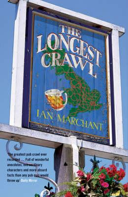

Travel to live, Live to Travel
Travel to live, Live to Travel
The British Isles are a group of islands off the north-western coast of continental Europe that consist of the islands of Great Britain, Ireland, the Isle of Man and over six thousand smaller isles.[7] Situated in the North Atlantic, the islands have a total area of approximately 315,159 km2,[5] and a combined population of just under 70 million. Two sovereign states are located on the islands: the Republic of Ireland (which covers roughly five-sixths of the island of Ireland)[8] and the United Kingdom of Great Britain and Northern Ireland. The islands of Alderney, Jersey, Guernsey and Sark are sometimes also taken to be part of the British Isles[9] even though, as
islands off the coast of France, they do not form
part of the archipelago
.
Accomendation-Hostels cost between 15-40 GBP a night for a dorm room; more in the big cities, less in the countryside. Amenities usually include free internet, breakfast, a common room, TV, and laundry facilities. Private rooms in hostels (twin or double) start at around 50 GBP and go up from there. Budget hotels offer the same amenities and start around 60 GBP per night for a twin room.
Transportation- In the United Kingdom, the National Rail service is always expensive. It’s one thing citizens in this part of the world love to complain about. A journey from London to Liverpool can cost as little as 25 GBP or as much as 150 GBP during peak hours (mid-day)! By booking your ticket with the National Rail over a week in advance and during off-peak hours, you’ll be able to find the cheaper tickets.
Food-You can eat cheap in England if you really pay attention. Fish and chips or a kebab are only a couple of pounds. Indian and Asian food can be purchased for 6 GBP for lunch entrees.
| A Year in the World : Journeys of a Passionate Traveller A CLASSIC FROM THE NEW YORK TIMES BESTSELLING AUTHOR OF UNDER MAGNOLIA A Year in the World is vintage Frances Mayes--a celebration of the allure of travel, of serendipitous pleasures found in unlikely locales, of memory woven into the present, and of a joyous sense of quest. |  |
Rolling Through The Isles : A Journey Back Down the Roads that led to Jupiter Having crisscrossed the globe twice, Ted returns to the British Isles to rediscover the country of his youth. The result is a revealing portrait of modern Britain and a witty and affectionate journey back to the past, when Ted would hitchhike across the country visiting friends (and girlfriends). | |
| Michelin Guide Great Britain & Ireland 2018 : Restaurants & Hotels The MICHELIN Guide Great Britain & Ireland 2019 is the definitive resource for carefully researched, objective recommendations to 2,200 restaurants, including 600 pubs and 1,500+ hotels with 500 B&B's in England, Scotland, Wales and Ireland. Anonymous inspectors use the famed Michelin food star rating system to create a substantive selection of restaurants across the British Isles, offering a diverse choice for all budgets. |  | The Longest Crawl The British love their booze. Ian Marchant - bon viveur, pub singer and writer - sets off to map the British landscape in drink. This mission takes Ian and his friend Perry on a gruelling month-long pub crawl, from the Turk's Head on the Scilly Isles to the Baa Bar in the Shetlands, taking in as many as possible of the British Isles' 60,000 pubs. |